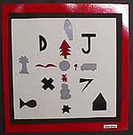
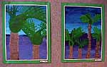

Evaluation/Reflection
- It was important to have the central key coordinating person provide media, information, support, and the coordination of displays.
- Teachers had a real sense of achievement and for the more experienced in the visual arts the opportunity to venture into new territory.
- Teachers felt comfortable in admitting, "OK I need help here. I can't find enough information on this person, what am I going to do?"
- The students were evaluating and contributing ideas from their perspective throughout the process.
- Classes visited the exhibition. Their evaluation focused on the following:
- What was their favourite activity in being involved in the visual arts focus?
- What did they most enjoy in making their own work?
- What was their overall impression of the exhibition?
- Both teachers and students developed new skills.
- The students developed an increased sense of ownership and awareness of the value of their work.
"The students had not seen what everybody else had been working on, and they were really excited to see it all come together in the school hall. The work is valued in the classroom but the extra care that had been taken to mount this exhibition prompted responses such as "Oh! is that my piece of work," which makes it special".
Jackie James
Reflection
- The exhibition has brought the visual arts to the forefront as a vital component of the school curriculum.
- The exhibition has meant that a great deal of knowledge about New Zealand artists has been gained.
- In the future, the level and standard at which the students are working will be established, by relating work produced to key words in the level specific AOs.
As a result of this exhibition the visual arts coordinator has identified the following possible goals:
- To have more 3D work in the next exhibition to ensure a balance between 2D and 3D work.
- To make a photographic record of the processes and various stages in the production of the art works, and to make it available to those viewing the exhibition.
- To invite artists, whose works were used as inspiration, to the opening event.
|
"So it gave teachers a real feeling of "Hey I can do this." They each did things that were quite different from what anyone else had done.
They weren't trying to do something that they had seen someone else do in the past and it meant they had ownership."
Jackie James
|

"One of the students said "Why don't we paint the stripes on one big sheet of paper then cut the strips up." So one of the students actually came up with an alternative which would have been easier."
Jackie James
|

|